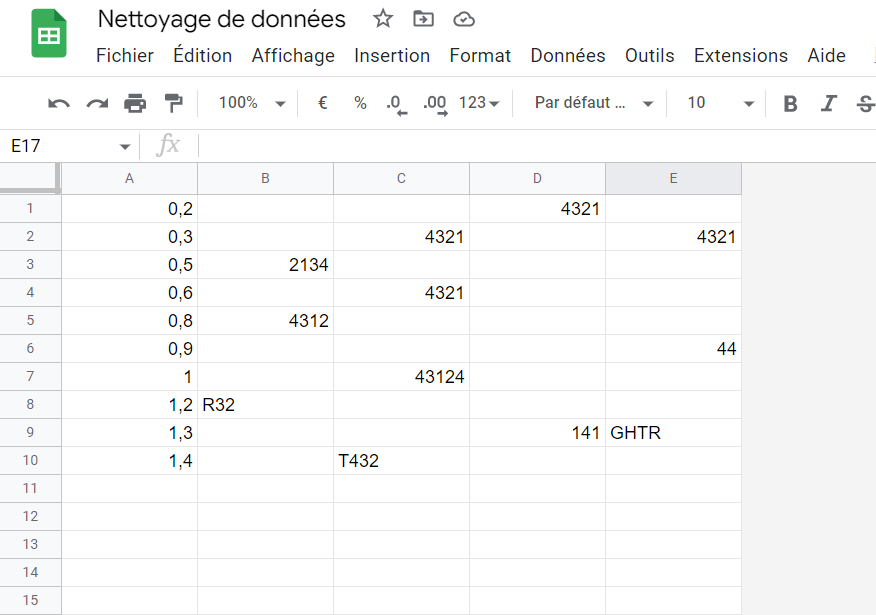

Google Apps Script
- MON
- 2022-2023
- temps 1
- Antoine Varnerot
Description du MON
Pendant les 10h consacrées à ce MON, je veux découvrir Google Apps Script et essayer d'appliquer les connaissances que j'ai acquises à un petit projet.
Réalisation
Pour commencer, j'ai lu le tutoriel fait directement par Google (https://developers.google.com/apps-script/guides/sheets) qui présente le fonctionnement général et les différentes fonctionnalités de Apps Script. On y apprend notamment qu'on peut faire :
- de la mise en forme
- des graphiques
- des fonctions personnalisées
- des macros
- des déclencheurs
- ...
J'ai trouvé cette présentation très facile à lire, avec des exemples pertinents et elle m'a paru assez complète.
Je suis ensuite allé voir le travail fait par mes camarades durant le MON1 pour essayer d'implémenter des fonctions un peu plus complexes. Par exemple, j'ai réussi à implémenter le vérificateur d'adresse mail fait par Ossama (https://francoisbrucker.github.io/do-it/mon/OA/MONs/mon1) qui s'actualise à chaque fois qu'on édite une case. Cela m'a permis de jouer un peu avec des objets complexes sans avoir à écrire trop de code. Ces deux premiers points étaient une sorte d'entrée en matière.
Afin de rentrer vraiment dans la programmation j'ai suivi un tuto complet trouvé sur Youtube (https://www.youtube.com/playlist?list=PLozmtcO5OqdqZZ6sP6faU18jIdyCiiYvS). C'est une playlist de 5 vidéos en français qui explore certaines fonctionnalités de Google Apps Script comme :
- lire les données d'un tableur
- Ecrire des données dans un tableur
- Modifier des cellules (bordure, couleur ...)
- Déclencher des fonctions automatiquement (à l'ouverture du document ou selon l'heure) Très bon tuto qui convient même à des débutants de Javascript. Je conseille de faire les exemples en même temps pour bien comprendre. Durée en faisant les exemples : < 2 heures
Maintenant que j'ai les bases de Google Apps Script, je me suis dit que c'était le temps de commencer un petit projet pour mettre en pratique ce que j'ai appris. Après avoir réfléchi un moment, j'ai eu du mal à trouver une idée. J'ai néanmoins trouvé sur le site https://developers.googleblog.com/2022/04/getting-started-is-hardest-part-find.html de nombreuses idées de mini-projets à faire avec Google Apps Script. Attention : il n'y a pas que des projets avec Google Sheet, il y a aussi des projets avec Google Slide ou Google Form.
J'ai choisi le projet "Clean up data in a spreadsheet". Le but de ce projet est, comme son nom l'indique, de nettoyer un tableur. Plus précisément, on veut avoir une fonction qui supprime les lignes vides du tableur et une fonction qui supprime les colonnes vides dans une zone que l'on sélectionne. Exemple :
On commence avec un set de données :

On clique ensuite sur les fonctions voulues dans la barre de recherche et on obtient le tableau suivant :
La base de données a été nettoyée. On pourrait trouver une application à cela dans le domaine de l'intelligence artificielle.
Code :
function onOpen() {
let menu = SpreadsheetApp.getUi().createAddonMenu()
menu
.addItem('Supprimer les lignes vides', 'clearRows')
.addItem('Supprimer les colonnes vides', 'clearColumns')
.addToUi()
}
function clearRows(){
//Definition de variables
const sheet = SpreadsheetApp.getActiveSheet();
let range = sheet.getActiveRange();
let firstActiveRow = range.getRow();
let height = range.getHeight();
let width = range.getWidth();
let values = range.getValues();
let rowsToKeep = [];
//Trouve les lignes à garder
for(let i = 0; i < height; i++){
for(let j = 0; j< width; j++) {
if(values[i][j] !== ''){
rowsToKeep.push(i);
}
}
}
//supprime les doublons dans rowsToKeep et supprime les lignes du sheet
for(let i = firstActiveRow + height - 1 ; i > firstActiveRow - 1; i--){
if(![...new Set(rowsToKeep)].reverse().includes(i-1)){
sheet.deleteRow(i);
}
}
}
function clearColumns() {
//Definition de variables
const sheet = SpreadsheetApp.getActiveSheet();
let range = sheet.getActiveRange();
let firstActiveColumn = range.getColumn();
let height = range.getHeight();
let width = range.getWidth();
let values = range.getValues();
let columnsToKeep = [];
//Trouve les colonnes à garder
for(let i = 0; i < width; i++){
for(let j = 0; j< height; j++) {
if(values[j][i] !== ''){
columnsToKeep.push(i);
}
}
}
//supprime les doublons dans columnsToKeep et supprime les colonnes du sheet
for(let i = firstActiveColumn + width - 1 ; i > firstActiveColumn - 1; i--){
if(![...new Set(columnsToKeep)].reverse().includes(i-1)){
sheet.deleteColumn(i);
}
}
}